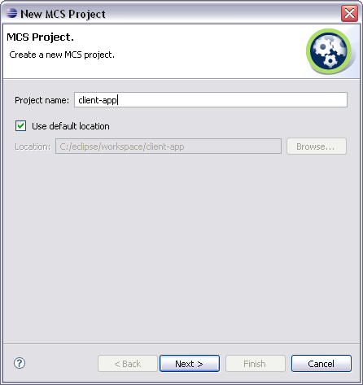
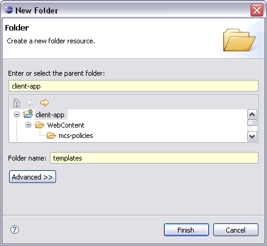
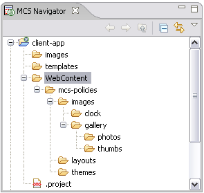

Creating a new project
This module reviews the steps to create a new MCS project, which will hold all the resources,
policies, and XDIME 2 files required by our web application.
Creating a project 
- Choose File | New | MCS Project
from the Eclipse menu

- Name your new project 'client-app' and click Next

- Now you need to provide the location of the device repository. Click the
Browse... button and navigate to the repository file you want to use in
this project. Device repository files have the extension .mdpr.
- By default, all the project policies are stored in the
WebContent/mcs-policies/ directory. However, the Policy source
directory control allows you to define a custom location for the MCS policies.
- Click Finish to complete
Adding a folder
By default all the policies are stored in the WebContent/mcs-policies
directory created by the MCS Project wizard. We will create three
subfolders within that directory, to store theme policies, layouts and image components
separately.
We will also create two additional folders, one for the XDIME 2 template files, second for
the image variants used by our sample application.
- Choose File | New | Folder from
the Eclipse menu
- Select client-app as a parent folder

- Name the new folder 'templates'
- Click Finish to complete
- Repeat the above described steps to create folder named 'images'
- Choose WebContent/mcs-polices as a parent directory, and create three
more folders named 'images', 'layouts' and 'themes'
MCS views
The MCS makes use of several Eclipse workbench views. One of them is a
Navigator view that allows you to view and select files in the project.
- Go to the MCS Navigator view and expand your project
- You will need some more folders under the
WebContent/mcs-polices/images directory. Add them to show the following structure
